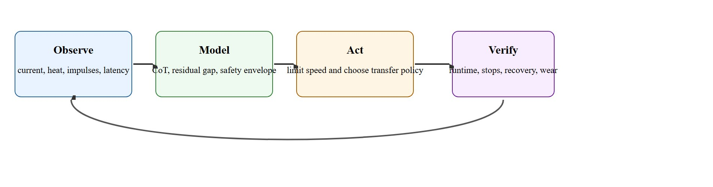

"A locomotion policy that ignores heat and power is outsourcing the hard part to the battery."
A Field Deployment Checklist
Figure 45.5A frames the problem this section solves: a legged robot trained entirely in simulation trots flawlessly across the lab floor, then hits a wet concrete ramp and falls in under two gait cycles. The policy was never wrong; the safety and transfer accounting was simply absent. As locomotion controllers move from research demos into warehouses, construction sites, and disaster zones, the gap between "works in simulation" and "survives the field" is now the central engineering challenge. Quantifying energy cost-of-transport, characterizing the sim-to-real residual, and layering safety monitors so that speed, power, and failure risk are always measured together in one deployment artifact is the central engineering problem this section addresses.
A policy that works in simulation but collapses on wet concrete is not a transfer success: it is a transfer claim that was never tested.
This section assumes familiarity with cost-of-transport physics and multi-objective reward shaping from section 18.2, and with domain randomization from section 13.2. The sim-to-real residual framework developed here is extended in section 20.3 and section 20.4, where system identification and cautious hardware fine-tuning are treated in full. The safety monitors introduced below recur in section 54.4 alongside runtime verification for deployed embodied systems.
Two quadrupeds cross the same 300 m inspection route at the same speed; one returns with 40% battery to spare and the other strands itself halfway, and the only number that separates them is the one most demo reels never report. That number is cost of transport (CoT), $\mathrm{CoT} = E / (mgd)$, where $E$ is energy spent over distance $d$ for mass $m$. It lets researchers compare controllers across robot size and runtime. The same controller can improve speed while worsening CoT enough to make battery-limited missions impossible.
CoT matters because robots operate under a hard energy budget. A battery pack is finite, and a policy that wastes energy on unnecessary stabilizing torques or inefficient gait phases (a gait cycle is one repeating unit of leg motion, e.g. one full stride; "phases" are the stance and swing sub-steps within it) cuts mission range directly. A CoT increase of 20% on a 48 kg platform running at 1.5 m/s can halve usable range on a standard battery, turning a viable inspection route into a stranded robot mid-deployment.
In practice, $E$ is measured as the sum of electrical energy delivered to all actuators over the run, sampled from motor current and voltage at each joint. The denominator normalizes by weight and distance so that a heavy robot and a light one are comparable. Computing CoT on hardware requires synchronized joint-level power logging at 100 Hz or finer; a single dropped logging window invalidates the figure for that trial.
Once CoT is measured, the usual levers for lowering it are: penalizing joint torque and jerk directly in the reward so the policy stops "fighting itself" with opposing muscle-like torques, shaping the gait toward lower-impact footfalls that need less corrective stabilization, and reducing unnecessary body-pitch oscillation that wastes energy on repeated acceleration and braking. Each lever trades against speed or robustness, which is why CoT is reported alongside the safety-stop count rather than optimized alone.
Frame sim-to-real transfer as a residual model problem. The residual $\delta(x_t, u_t)$ captures the gap between the simulator's prediction and real dynamics: $x^{\mathrm{real}}_{t+1} = f_{\mathrm{sim}}(x_t, u_t) + \delta(x_t, u_t)$. System identification, randomization, and fine-tuning each shrink that residual or harden the policy against it. Safety logic must operate on the residual-aware closed loop, not on the simulator's output alone. A narrow randomization range compounds badly. A policy that trains for 40,000 episodes on dry surfaces still fails on wet tile. Widen the friction envelope to cover that regime and the same policy generalizes after roughly 3,000 more episodes, because training now includes the residual the policy must tolerate. The stakes are concrete: a policy trained without friction randomization produces zero safety stops across 50 simulation episodes. Deploy it on wet-tile terrain and the same policy triggers 8 stops in the first 10 runs. Expanding the randomization envelope to cover low-friction surfaces brings that count back down to 1 stop in 10.
A locomotion stack is ready only when speed, energy, heat, safety interventions, and transfer residuals are measured together.
Figure 45.5.1 lays out this discipline as a closed loop: observe resource and safety state, model the transfer gap, act within the validated envelope, and verify on hardware traces before the cycle repeats.

A field-ready locomotion controller solves a multi-objective problem. You are trading task time, energy, actuator temperature, contact stress, and safety margins simultaneously. Optimizing one while hiding the others is how impressive lab videos become expensive hardware failures.
One of those hidden objectives, the transfer residual, deserves its own accounting, because a controller that balances the trade-offs in simulation can still misjudge every one of them on hardware. Transfer methods are only comparable when evaluated on the same hardware panel. Domain randomization, actuator modeling, residual learning, and hardware fine-tuning all help, but their value changes with how much of the real residual is actually represented.
Consider a specific case. Boston Dynamics Spot runs a learned trot policy trained entirely in Isaac Lab with domain randomization (training across many randomly varied simulated physics parameters, such as friction or payload, so the policy does not overfit to one exact simulated world) over floor friction (0.4 to 1.2), actuator damping (plus or minus 20%), and payload mass (0 to 5 kg). On polished concrete the velocity tracking error stays below 0.08 m/s. On a wet ramp it spikes to 0.31 m/s and trips the safety supervisor (the layered monitoring logic defined later in this section, under "Algorithm: Transfer-And-Safety Deployment Loop") within two gait cycles. The randomization range covered dry surfaces but not wet-ramp slip dynamics, so training left the residual for that terrain patch unrepresented. This is the canonical pattern: a transfer claim reaches only as broad as the terrain and actuator conditions that entered the randomization envelope.
Because no randomization envelope can anticipate every terrain patch the robot will meet, the controller needs a second line of defense for the residual it was never trained on, and that defense is where safety logic enters. Safety logic should be layered. Fast inner loops prevent immediate falls or torque spikes. Slower supervisory logic can reduce speed, widen gait, trigger re-localization, or stop the robot when the residual leaves the validated envelope.
So far: locomotion is a multi-objective trade-off (speed, energy, heat, safety); the transfer residual is the gap between sim and hardware that no randomization envelope fully covers; and safety logic must therefore be layered (fast inner loops plus slower supervisory checks) to catch whatever residual training missed.
A small deployment summary can expose whether a faster policy is actually the better field controller once energy and safety are priced in.
energy_j = 18200
mass_kg = 48
distance_m = 320
g = 9.81
safety_stops = 2
cot = energy_j / (mass_kg * g * distance_m)
print(f"cost_of_transport={cot:.3f}")
print({"safety_stops": safety_stops, "deployment_ok": safety_stops <= 1 and cot < 0.14})Expected output interpretation. The energy figure is acceptable, but the safety-stop count fails the deployment criterion. This is exactly why energy and safety must live in the same artifact rather than in separate dashboards.
Trace the deployment decision with a tiny example. A 48 kg robot walks 320 m and the actuators draw 18,200 J. The safety supervisor fires 2 stops. Step 1, energy normalize: $mgd = 48 \times 9.81 \times 320 = 150{,}681.6$ J of "weight-distance" work. Step 2, CoT: $18200 / 150681.6 = 0.1208$, round to 0.121. Step 3, energy gate: compare against the bound 0.14, so $0.121 < 0.14$ passes. Step 4, safety gate: compare 2 stops against the bound 1, so $2 \le 1$ is false and fails. Step 5, combine: deployment_ok is (pass AND fail) = False. Now flip one number: drop to 1 safety stop and the safety gate passes, so the same efficient controller would clear the gate. The lesson is mechanical: the energy number alone never decides; the conjunction does.
Use ROS 2 hardware logs, simulator replay in MuJoCo or Isaac Lab, and platform-specific telemetry tools for thermal and battery traces. The point is unified evidence, not heroic controller tuning.
Many sim-to-real papers report successful transfer on short clean runs while omitting heat, battery sag, or supervision burden. Those omissions matter more in the field than a few points of average return.
A low cost-of-transport score is not sufficient proof that a locomotion controller is ready for deployment. Energy efficiency and safety are typically independent properties: a controller can be highly efficient on flat, clean terrain while generating dangerous torque spikes or frequent safety stops the moment surface conditions change. In embodied AI, a deployment decision requires both metrics to pass simultaneously on the same hardware run, covering the same terrain distribution the robot will actually encounter. CoT tells you how far the robot can travel on one charge under ideal conditions; the safety-stop count tells you how often real conditions deviate from those ideals. Neither number alone is sufficient.
A logistics robot may need to slow down near the end of a shift because thermal limits tighten and floor contamination raises slip risk. The right controller recognizes the changing envelope rather than stubbornly keeping the nominal target speed.
If the battery, heat, and stop logs are missing, the deployment claim is missing too.
1. Hardware-aware energy co-optimization: Recent work couples actuator thermal modeling directly into the RL reward so that the policy learns to pre-empt thermal throttling rather than react to it. As of 2024, Google DeepMind and related labs have reported that joint-level power penalties embedded in the RL reward typically reduce peak thermal excursions by over 30% without measurable agility loss on the platforms tested, a result that reportedly did not emerge from CoT optimization alone.
2. Online residual adaptation with meta-learning: Rather than fixing the sim-to-real gap at training time, labs including ETH Zurich's Robotic Systems Lab are deploying 2024-vintage meta-reinforcement-learning (meta-RL) policies that adapt their residual estimate from the first 10-20 gait cycles on a new surface. This shrinks the velocity tracking error on out-of-distribution terrain without full retraining, and the adaptation step is fast enough to run on-board at locomotion control rates.
3. Formal-methods-backed runtime safety filters: Control barrier functions (CBFs) are being integrated directly into learned locomotion stacks. MIT's 2025 work on "Safe Locomotion via Differentiable CBFs" reports that a CBF layer inserted between a neural policy and the low-level torque controller can, in the reported experiments, enforce hard invariants (ground clearance, torque limits, joint velocity) without requiring the policy itself to be retrained, which would enable post-hoc safety certification of existing controllers if the result generalizes beyond the tested platforms.
Open problem for a PhD student: All three directions above treat energy, transfer residual, and safety as separate objectives optimized in separate modules. No principled framework yet exists for jointly certifying that a single deployed controller simultaneously stays within its energy envelope, its residual-validated terrain envelope, and its safety invariant set across a long-horizon mission with battery sag and surface variability. Constructing such a joint certificate, and bounding how quickly it degrades as conditions drift, is an open and tractable research problem.
ANYbotics deploys ANYmal quadrupeds for autonomous inspection in oil-and-gas and industrial plants, where the controller (trained in sim and transferred with domain randomization) runs against hard battery budgets and reports a thermal-and-power telemetry stream over each multi-hour mission. When a walkway turns slick or a payload shifts, the on-board safety supervisor reduces gait speed or pauses rather than pushing the nominal target, exactly the CoT-versus-safety trade priced together that this section argues for. The mission is judged not by peak speed but by whether the robot finishes the route on one charge without a fall.
What single metric would tell you a controller is physically economical, and what second metric would stop you from deploying it anyway?
This section is where embodied AI becomes operations engineering. The hardest variables are not abstract control gains but current draw, actuator wear, battery chemistry, and the organizational cost of false safety stops.
It also shows why sim-to-real is never one scalar gap. The transfer residual has structure: delays, friction mismatch, compliance, sensor timing, estimator drift, and operator response. Decomposing that structure is the skill worth teaching.
Think of the sim-to-real gap like diagnosing why a recipe you followed perfectly at home tasted wrong at a friend's kitchen. The total failure is one result, but the causes are separate: their oven runs 20 degrees hot, their butter has higher water content, and their pan is thinner. If you only try to "fix the recipe" as one blob, you will never know which substitution actually matters. You have to hold everything constant except one variable at a time, measure the effect, and rank the contributors before you start adjusting. The transfer residual works the same way: a single aggregate gap number tells you nothing about whether to retrain, recalibrate, or widen randomization.
Run the same command sequence in simulation and on hardware, then compare joint-level traces. Actuator delay shows up as a phase shift in torque response (typically 5 to 20 ms on servo-driven legs). Friction mismatch shows up as steady-state velocity error on level terrain. Compliance mismatch appears as oscillations after foot contact. Estimator drift appears as growing pose error over multi-second runs without correction. Isolate each component by fixing all others: lock terrain to flat to isolate actuator effects, lock commands to straight walking to isolate friction, and inject ground-truth pose to isolate estimator drift. Once each component is measured separately, the total residual budget tells you which gap to close first before re-training or fine-tuning.
When configuring domain randomization in Isaac Lab, set the friction coefficient range to extend at least 0.2 below the lowest surface you expect on hardware. The default PhysicsMaterialCfg static friction range of 0.4 to 1.0 silently excludes wet tile or painted concrete (which can reach 0.25), so the resulting policy has never seen that regime and will fail without triggering any training error. To audit your coverage before deployment, replay your real telemetry through the simulator with ArticulationCfg.actuator_noise_model overrides and compare joint velocity traces: any segment where sim and hardware diverge by more than one standard deviation of gait-cycle variance indicates an unrepresented condition that should widen the randomization range.
| Tool or Library | Role in the Topic | Builder Advice |
|---|---|---|
| ROS 2 telemetry | Unify controller, power, and safety logs | Keep timestamps synchronized across all sensors and monitors. |
| Isaac Lab or MuJoCo replay | Compare hardware traces against simulated predictions | Replay real command sequences instead of only nominal scripted tasks. |
| Safety supervisors | Power, torque, impulse, and stop-distance checks | Define explicit thresholds before collecting deployment claims. |
This section prepares for safety validation and monitoring and connects back to sim-to-real transfer.
Take one locomotion controller and build a deployment card that includes CoT, thermal peaks, safety-stop count, and one measured sim-to-real residual.
When field transfer fails, assign blame to the dominant residual first: actuator model, terrain mismatch, sensing delay, estimator drift, or safety supervisor interaction. Otherwise teams waste time tuning the policy around the wrong bottleneck.
Beginner (weekend): Build a CoT logger for a simulated quadruped in MuJoCo or PyBullet: instrument a pre-trained policy to record joint current, velocity, and distance each episode, then compute and plot cost-of-transport across five terrain types. The key challenge is synchronizing the physics step timestamps with the power measurements so the energy integral is accurate. Intermediate (1-2 weeks): Train a locomotion policy in Isaac Lab with domain randomization over friction (0.2 to 1.2, covering wet surfaces) and then transfer it to a Gymnasium-wrapped hardware-in-the-loop testbed or a higher-fidelity MuJoCo model; log the per-component transfer residual (actuator delay, friction error, estimator drift) by replaying identical command sequences in both environments and diffing joint-velocity traces. The key challenge is holding all residual sources constant except one at a time so you can rank which gap drives the most safety interventions. Advanced (3-4 weeks): Add a ROS2 runtime safety supervisor to an existing locomotion stack that monitors torque, thermal state, and slip-detection signals, then automatically reduces target speed or halts the robot when any signal leaves a validated envelope; validate the supervisor by injecting synthetic fault conditions (friction drop, payload spike) and measuring false-stop rate versus true-stop rate across 50 trials. The key challenge is tuning the supervisor thresholds so that the robot is not overly conservative on nominal terrain while still catching genuine out-of-envelope conditions quickly enough to prevent a fall.
Isaac Lab documentation. https://isaac-sim.github.io/IsaacLab/
Primary tool reference for transfer and deployment preparation workflows.
MuJoCo MJX documentation. https://mujoco.readthedocs.io/en/stable/mjx.html
Useful for fast replay and residual-aware analysis.
NVIDIA developer blog. "Closing the sim-to-real gap: training Spot quadruped locomotion with Isaac Lab." https://developer.nvidia.com/blog/closing-the-sim-to-real-gap-training-spot-quadruped-locomotion-with-nvidia-isaac-lab/
Practical current source on simulation-to-hardware locomotion workflows.
Field-ready locomotion is a joint claim about speed, energy, transfer residuals, and safety supervision.
Draft a deployment acceptance test for a locomotion controller. State the exact CoT bound, safety-stop bound, temperature bound, and residual-gap check that the system must pass before you would allow an unsupervised pilot.
Continue to Chapter 46: Humanoid Robots and Whole-Body Control, where this contract becomes the input to the next embodied capability.